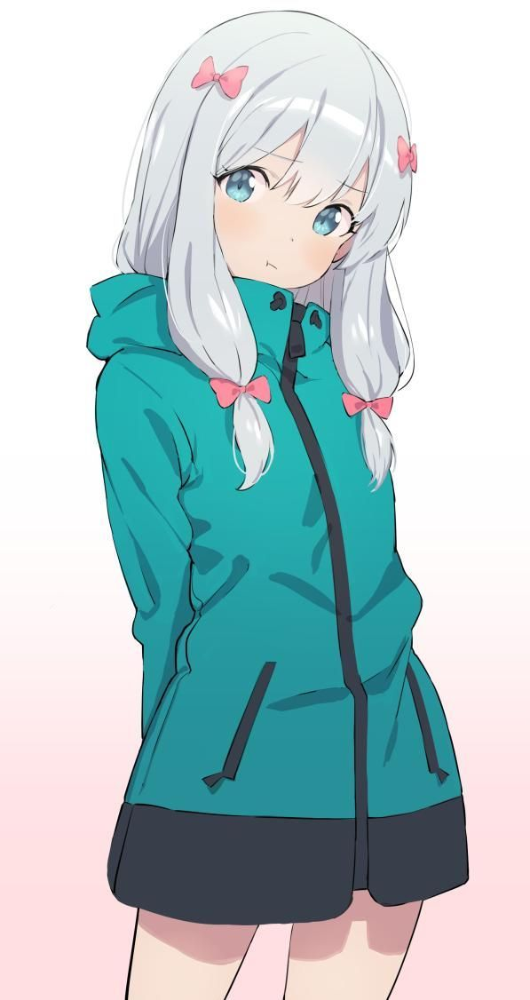
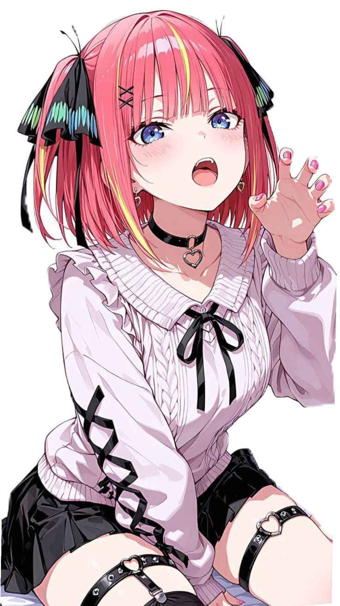
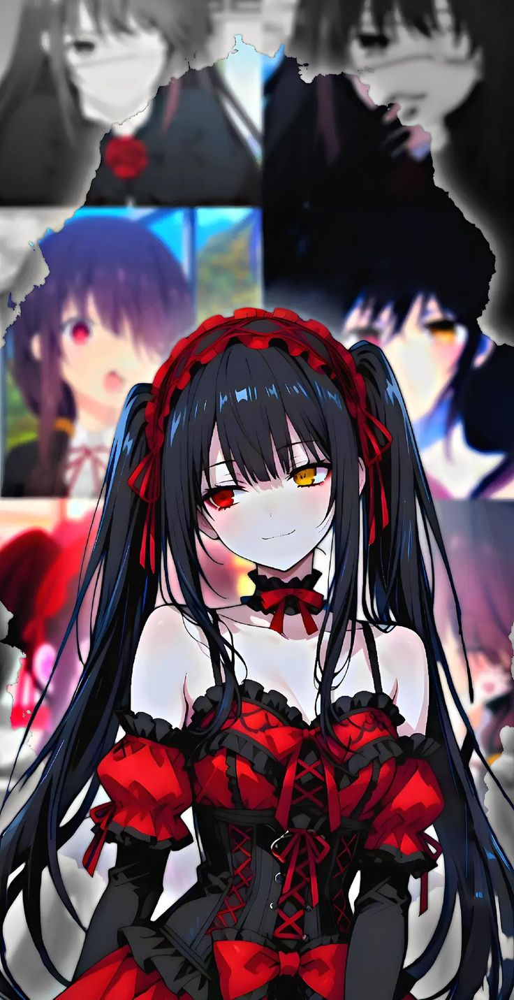
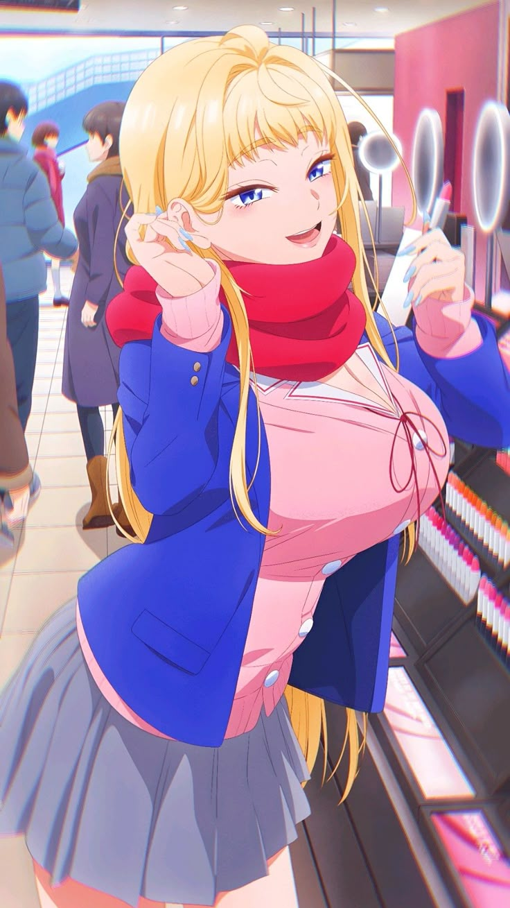

ELAINA
Istri Ke-1

NODOKA MANABE
Istri Ke-2

VIOLET EVERGARDEN
Istri Ke-3

SAGIRI IZUMI
Istri Ke-5

SAKURAMORI AKANE
Istri Ke-6

WAGURI KAORUKO
Istri Ke-7

RIAS GREMORY
Istri Ke-9

MIO
Istri Ke-10

NAKANO NINO
Istri Ke-11

KURUMI TOKISAKI
Istri Ke-12

FUYUKI MINAMI
Istri Ke-13

TOMOE SHIN
Istri Ke-14

REM
Istri Ke-16

REZE
Istri Ke-17

FENRIR RYS
Istri Ke-18

NOBARA
Istri Ke-19

VESTIA ZETA
Istri Ke-20

KOBENI
Istri Ke-21

SENTO ISUZU
Istri Ke-22

RYUKO
Istri Ke-23

CHIZURU
Istri Ke-24

ADO
Istri Ke-25

ALYA
Istri Ke-26

MARIN KITAGAWA
Istri Ke-27

OSHINOKO AI
Istri Ke-28

KOMI
Istri Ke-29

IROHA KOHINATA
Istri Ke-30

SHIKIMORI
Istri Ke-31

MAI SAKURAJIMA
Istri Ke-32

SAYURI AKINO
Istri Ke-33

MONA KAWAI
Istri Ke-34

MYTHIA BATFORD
Istri Ke-35

NANBA TOMO
Istri Ke-36

ESDEATH
Istri Ke-37

MAKI ZENIN
Istri Ke-38

YOR FORGER
Istri Ke-39

SHINOBU KONCHO
Istri Ke-40

FURINA
Istri Ke-41

AKANE
Istri Ke-42

YAE MIKO
Istri Ke-43

RUMIA TINGEL
Istri Ke-44

MITSURI
Istri Ke-45

KEQING
Istri Ke-46

GANYU
Istri Ke-47

RAIDEN SHOUGUN
Istri Ke-48

KOTONE
Istri Ke-49

KANAO
Istri Ke-50
.jpeg)